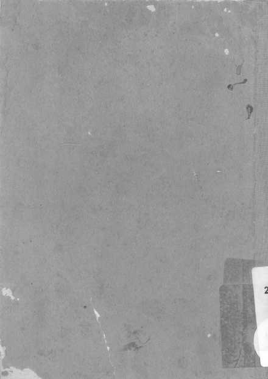

ديوان خطب ابن نباتة
ابن نباتة الخطيب (ت 768 هـ). طبعة عام 1907م، نسخة مصورة من أرشيف الإنترنت

بسم الله الرحمن الرحيم
مكتبة خطب الجمعة وكتب الخطب
ابن نباتة الخطيب (ت 768 هـ). طبعة عام 1907م، نسخة مصورة من أرشيف الإنترنت

﴿ادْعُ إِلَىٰ سَبِيلِ رَبِّكَ بِالْحِكْمَةِ وَالْمَوْعِظَةِ الْحَسَنَةِ﴾
الخطب المكتوبة هنا مسودات تحتاج مراجعة عالم أو إمام قبل الإلقاء.